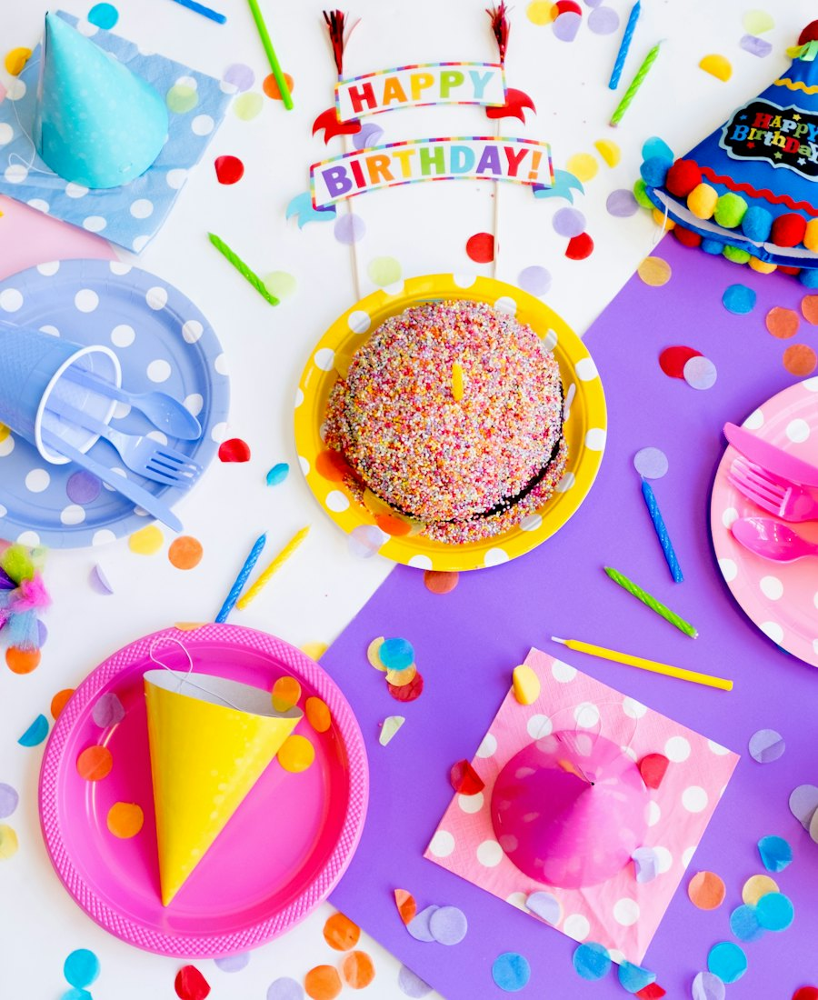
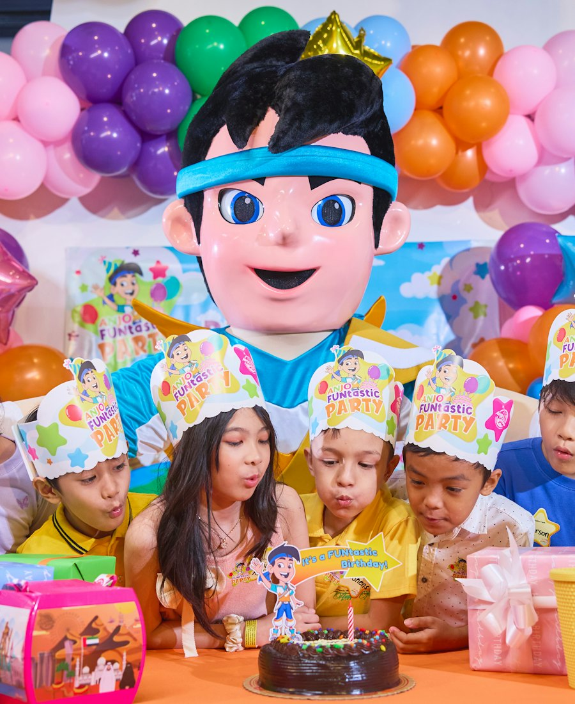
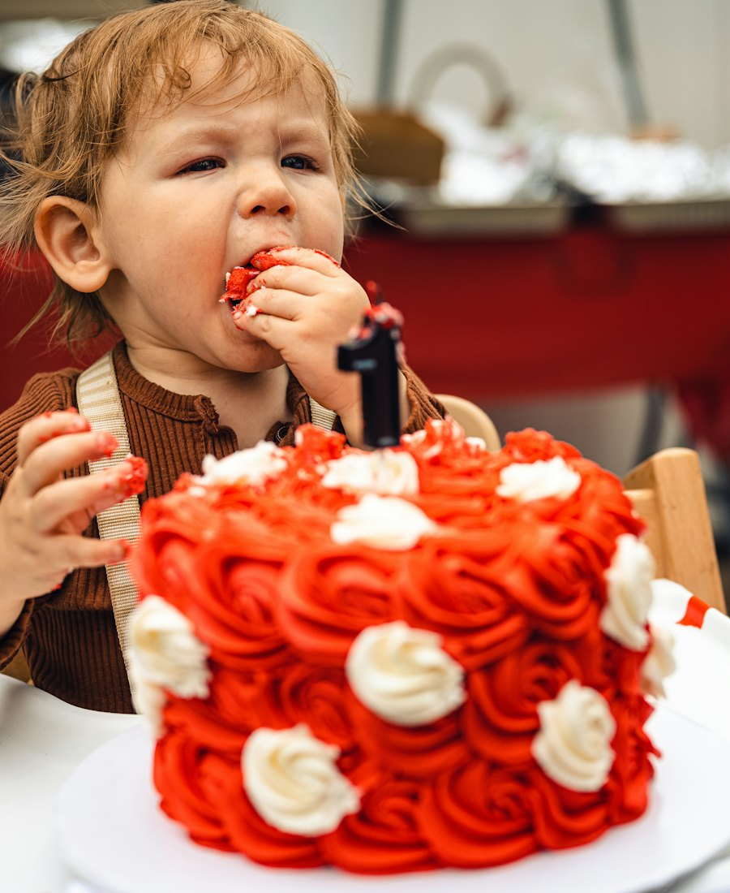
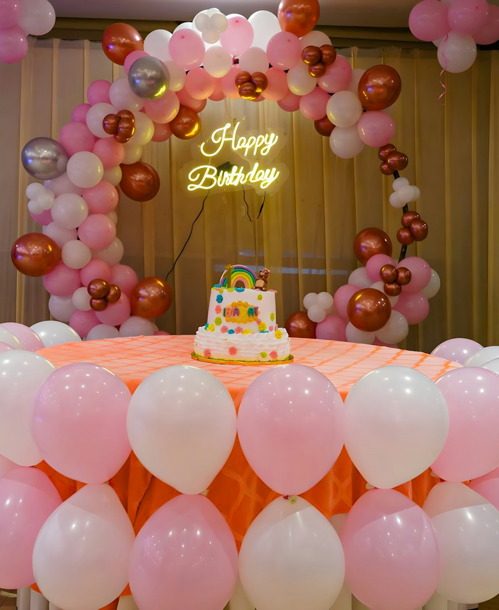
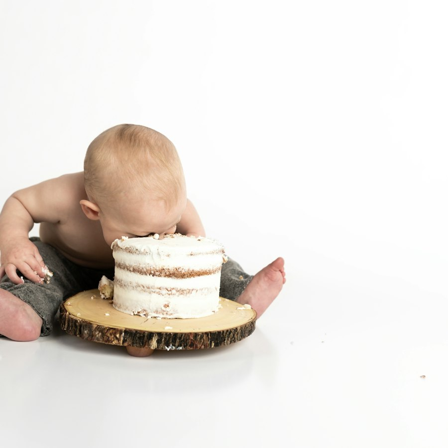
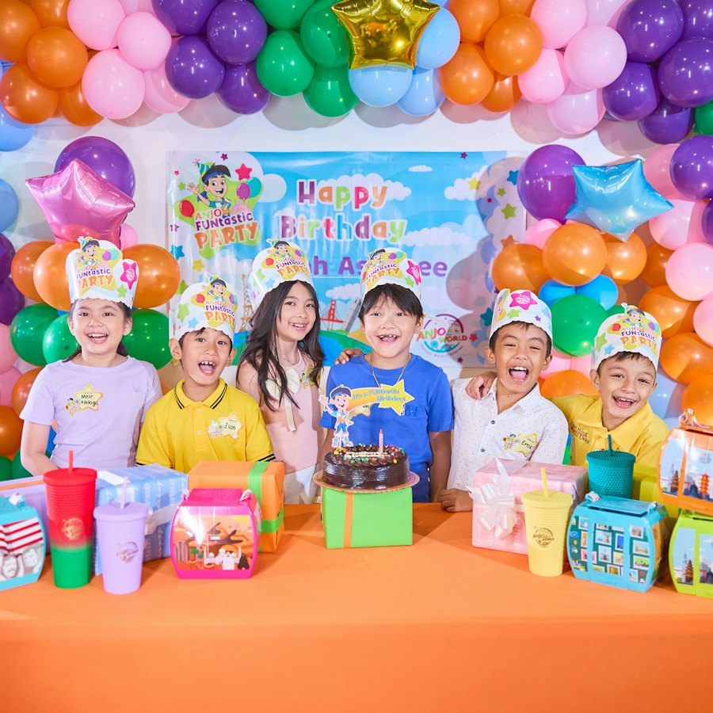

A festa inteira, da mesa intacta ao último pedaço de bolo
No dia, você vai estar recebendo os convidados. A Iara fica de olho no que ninguém vê: a decoração antes de alguém mexer, o abraço da avó, a careta no parabéns.
- Decoração e detalhesMesa, bolo, doces e lembrancinhas do jeito que foram montados.
- Convidados e famíliaOs abraços, as crianças correndo, quem veio de longe.
- BrincadeirasPula-pula, piscina de bolinhas, personagem, pista de dança.
- O momento das velinhasDe vários ângulos, porque ele dura poucos segundos.
Texto de exemplo. No site final entra o jeito de trabalhar da Iara e o que vem em cada pacote.



Marque na folha de contato o que você quer fotografar
É assim que fotógrafo escolhe as melhores fotos: circulando na folha. Toque nos quadros, preencha a ficha e o pedido vai pronto para o WhatsApp da Iara.
Quem está atrás da câmera
“Eu faço das lembranças um lugar seguro.”
Iara Amâncio
São mais de 13 anos criando memórias afetivas em Sumaré: festas de aniversário, eventos e casamentos de um lado, e do outro um estúdio próprio para bebês, gestantes e newborn, acolhedor, climatizado e seguro.
- @iaraamanciofotografiaFestas, aniversários e eventos
- @estudioiaraamancioBebês, gestantes e newborn
No site final entram uma foto da Iara e os depoimentos das famílias, que hoje estão nos destaques do Instagram.
Lembranças guardadas



Fotos ilustrativas. No site final entram as fotos das festas e ensaios feitos pela Iara.
Como reservar a data
Chame no WhatsApp
Conte a data, o horário e onde vai ser a festa.
Escolha o pacote
A Iara manda as opções de cobertura e de vídeo.
Garanta a data
Sábados e domingos são os mais disputados para festas.
Receba as fotos
Tratadas e prontas para guardar, imprimir e mostrar.
Texto de exemplo. No site final entra o passo a passo da Iara, que está no destaque “Como agendar”.
Em Sumaré e região
A Iara vai até a sua festa, no buffet, em casa ou no salão do condomínio. Os ensaios de bebês e gestantes são no estúdio, em Sumaré.
- Cidade
- Sumaré – SP
- (19) 99714-1915
- Horário
- Combinado pelo WhatsApp, conforme a data da festa
No site final entra o endereço do estúdio no mapa.